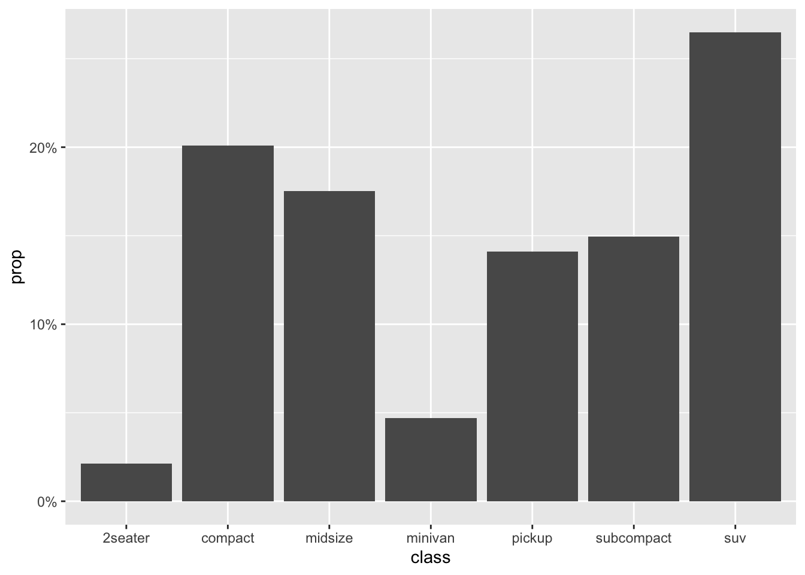

Chapter 7 Data Visualization
7.1 Why Visualization?
Data visualization is very important. I would like to illustrate this point with two interesting examples.
7.1.1 Datasaurus Dozen Dataset
First, let us take a look at an interesting dataset—Datasaurus, which is available in demo_data/data-datasaurus.csv (source: Datasaurus data package. This dataset was first created by Alberto Cairo.
| group | x | y |
|---|---|---|
| dino | 95.38460 | 36.794900 |
| dino | 98.20510 | 33.718000 |
| away | 91.63996 | 79.406603 |
| away | 82.11056 | 1.210552 |
| h_lines | 98.28812 | 30.603919 |
| h_lines | 95.24923 | 30.459454 |
| v_lines | 89.50485 | 48.423408 |
| v_lines | 89.50162 | 45.815179 |
| x_shape | 84.84824 | 95.424804 |
| x_shape | 85.44619 | 83.078294 |
| star | 82.54024 | 56.541052 |
| star | 86.43590 | 59.792762 |
| high_lines | 92.24840 | 32.377154 |
| high_lines | 96.08052 | 28.053601 |
| dots | 77.92604 | 50.318660 |
| dots | 77.95444 | 50.475579 |
| circle | 85.66476 | 45.542753 |
| circle | 85.62249 | 45.024166 |
| bullseye | 91.72601 | 52.623353 |
| bullseye | 91.73554 | 48.970211 |
| slant_up | 92.54879 | 42.901908 |
| slant_up | 95.26053 | 46.008830 |
| slant_down | 95.44349 | 36.189702 |
| slant_down | 95.59342 | 33.234129 |
| wide_lines | 77.06711 | 51.486918 |
| wide_lines | 77.91587 | 45.926843 |
With a dataset like this, we can break the dataset into several subsets by group and for each subset we compute their respective mean scores and standard deviations of x and y.
According to the summary statistics of each sub-group (cf. Table 7.2), they look indeed similar:
| group | x_fn1 | y_fn1 | x_fn2 | y_fn2 |
|---|---|---|---|---|
| away | 54.266 | 47.835 | 16.770 | 26.940 |
| bullseye | 54.269 | 47.831 | 16.769 | 26.936 |
| circle | 54.267 | 47.838 | 16.760 | 26.930 |
| dino | 54.263 | 47.832 | 16.765 | 26.935 |
| dots | 54.260 | 47.840 | 16.768 | 26.930 |
| h_lines | 54.261 | 47.830 | 16.766 | 26.940 |
| high_lines | 54.269 | 47.835 | 16.767 | 26.940 |
| slant_down | 54.268 | 47.836 | 16.767 | 26.936 |
| slant_up | 54.266 | 47.831 | 16.769 | 26.939 |
| star | 54.267 | 47.840 | 16.769 | 26.930 |
| v_lines | 54.270 | 47.837 | 16.770 | 26.938 |
| wide_lines | 54.267 | 47.832 | 16.770 | 26.938 |
| x_shape | 54.260 | 47.840 | 16.770 | 26.930 |
So it may be tempting for us to naively conclude that all groups show similar behaviors in x and y measures.
But what if we plot all subjects by groups?

See? When we visualize our data, sometimes the patterns reveal themselves. What you see in numbers may be even deceiving.
7.1.2 Simpson’s Paradox
Another example is Simpson’s Paradox, which occurs when trends that appear when a dataset is separated into groups reverse when the data are aggregated.

Based on the above graph, you would probably conclude that when x increases, y decreases. However, if you plot the scatter plots by groups, you may get the opposite conclusions. All correlations between x and y in each sub-group are now positive.

7.2 ggplot2

R is famous for its power in data visualization. In this chapter, I will introduce you a very powerful graphic library in R, ggplot2.
For any data visualization, there are three basic elements:
- Data: The raw material of your visualization, i.e., a data frame.
- Aesthetics: The mapping of your data to aesthetic attributes, such as
x,y,color,linetype,fill. - Geometric Objects: The layers of geometric objects you would like to see on the plots, e.g., lines, points etc.

I will demonstrate some basic functions of ggplot2, with the pre-loaded dataset mpg:
library(tidyverse)mpgFor data visualization, the first step is to know your dataset, i.e., the meanings of rows and columns. In the dataset mpg, each row refers to a car and the columns include:
model: manufacturer model namedispl: engine displacement, in litres (排氣量)hwy: highway miles per galloncty: city miles per galloncyl: number of cylinders (汽缸數目)class: car typedrv: the type of drive train, where f = front-wheel drive (前輪驅動), r = rear wheel drive (後輪驅動), 4 = 4wd (四輪傳動)
To begin with, I like to use one simple example to show you how we can create a plot using ggplot2.
With the dataset mpg, we can look at the relationship between displ and hwy: whether the engine displacement has to do with the city miles per gallon. We can draw a scatter plot as shown below.
ggplot(data = mpg, aes(x = displ, y = hwy)) + geom_point()
A ggplot object often includes lat least three important components:
ggplot()initializes the basic frame of the graph, withdata = mpgspecifying the data frame on which the plot is builtaes()further specifies the mapping of axises and the factors in the data frame.aes(x = displ, y = hwy)indicates thatdisplis mapped as thexaxis andhwyasyaxis+means that you want to add one layer of the graph to the template.geom_point()means that you want to add a layer of point graph.
7.3 Variables and Data Type
When creating the graphs for your data, you need to know very well the data type of all your variables to be included in the graph. There are at least three important data types you need to know:
- Categorical variables: these variables usually have only limited set of discrete values, i.e., levels. They are usually coded as
charactervector orfactorin R. - Numeric variables: these variables are continuous numeric values. They are usually coded as
numericvector. - Date-Time variables: these variables, although being numeric sometimes, refer to calendar dates or times. They are usually coded as
Date-TimeClassesin R.
The general principle in data visualization is that always pay attention to the data type for variables on the x-axis and y-axis.
7.4 One-variable Graph
If your graph includes only one variable from the data, usually this would indicate that you are interested in the distribution of the variable values.
- Continuous variable
- Density plot
- Histogram
ggplot(data = mpg, aes(hwy)) + geom_density(kernel = "gaussian")
ggplot(data = mpg, aes(hwy)) + geom_histogram()
- Categorical variable
- Bar plot
ggplot(data = mpg, aes(x = class)) + geom_bar()
Exercise 7.1 How can we create a bar plot as above but with the bars arranged according to the counts in a descending order from left to right? (see below)
Hint: checkreorder()

7.5 Two-variable Graph
If your graph includes two variables, then very likely one variable would go to the x-axis and the other, y-axis. Depending on their data types (categorical or numeric), you may need to create different types of graphs.
- Continuous X, Continuous Y
- Scatter Plot
ggplot(data = mpg, aes(x = displ, y = hwy)) + geom_point()
We can add a regression line to the scatter plot:
ggplot(data = mpg, aes(x = displ, y = hwy)) + geom_point() + geom_smooth(method = "lm",
formula = y ~ x)
- Categorical X, Continuous Y
- Boxplot
ggplot(data = mpg, aes(x = class, y = hwy)) + geom_boxplot()
- Error Plot
ggplot(data = mpg, aes(x = class, y = hwy)) + stat_summary(fun.data = mean_cl_boot,
geom = "pointrange")
If you run into problems plotting the error plot using stat_summary(), probably you did not have the necessary packages installed in your current R environment. Please make sure that you install the package tidyverse or ggplot2 properly without any error messages in the process of installation. Also, please note that you need to install the tidyverse from source. (For the other relevant packages, it is ok to install those packages in a normal way from CRAN). For more detail, please refer back to Chapter 2.9.
- Categorical X, Categorical Y
- Bubble Plot
ggplot(data = mpg, aes(x = manufacturer, y = class)) + geom_count() + theme(axis.text.x = element_text(angle = -90))
7.6 Adding Other Aesthetic Features
7.6.1 color
Now I would like to demonstrate how we can add additional aesthetic mappings to your graphs.
Earlier we create a scatter plot using the following code:
ggplot(data = mpg, aes(x = displ, y = hwy)) + geom_point()
The above plot includes two variables into the graph, x = displ and y = hwy.
The additional aesthetic features include things like colors, sizes, shapes, line-types, widths etc. The idea is that we can introduce a third variable into the plot by modifying the color of the points based on the value of that third variable.
- For example, you can add
color = ...in theaes(x = ..., y = ..., color = ...)to create the graphs on the basis of another grouping factor.
ggplot(data = mpg, aes(x = displ, y = hwy, color = drv)) + geom_point()
In the above example, color is an aesthetic and the color of each point is now mapped to the variable drv. In this case, points belong to each group of drv would be of different colors—different drive train types have different colors in points.
Note that the x-coordinates and y-coordinates are aesthetics too, and they got mapped to the displ and hwy variables, respectively. We further map the color to the third variable drv, which indicates whether a car is front wheel drive, rear wheel drive, or 4-wheel drive.
7.6.2 shape
We can map a third variable to the graph using shape as well.
ggplot(data = mpg, aes(x = displ, y = hwy, shape = drv)) + geom_point()
And of course you can map both shape and color to the same third variable:
ggplot(data = mpg, aes(x = displ, y = hwy, color = drv, shape = drv)) + geom_point()
7.6.3 Other geom_... Layers
The ggplot object consists of layers of geometric objects. We can also add another geom object, such as a smooth line by using the +:
ggplot(data = mpg, aes(x = displ, y = hwy)) + geom_point() + geom_smooth()
Could you predict what kind of graph you would get with the following code?
ggplot(data = mpg, aes(x = displ, y = hwy, color = drv)) + geom_point() + geom_smooth()7.6.4 Labels
We can add self-defined labels of the x and y axes and main titles to the graphs using labs().
ggplot(data = mpg, aes(x = displ, y = hwy)) + geom_point() + geom_smooth(method = "lm",
formula = y ~ x) + labs(title = "Correlation between Displacement and Highway Miles per Gallon",
x = "Displacement", y = "Miles/Per Gallon")
ggplot(data = mpg, aes(x = displ, y = hwy, color = drv)) + geom_point() + labs(x = "Engine Displacement (litres)",
y = "Highway Miles per Gallon", title = "Scatter Plot -- DISPL by HWY")
7.6.5 fill
For bar plots or histograms, we can fill the bars with different colors by adding fill = ... in the aes().
ggplot(data = mpg, aes(x = class, fill = class)) + geom_bar()
ggplot(data = mpg, aes(x = class, y = hwy, fill = class)) + geom_boxplot()
7.6.6 Interim Summary
Here are a list of common aesthetic parameters we often use in aes():
size = ...color = ...fill = ...alpha = ...
7.7 Saving Plots
Saving a ggplot can be easily done by ggsave(). You can first save a ggplot object to a variable and then use ggsave() to output the ggplot object to an external file. It is recommended to use common image formats for publications, e.g., png, jpg.
Also, please remember to set the width and height (in inches) of your graph. These settings will greatly affect the look of the graph.
my_first_graph <- ggplot(data = mpg, aes(x = displ, y = hwy, color = drv)) + geom_point() +
labs(x = "Engine Displacement (litres)", y = "Highway Miles per Gallon", title = "Scatter Plot -- DISPL by HWY")
class(my_first_graph) # check the class[1] "gg" "ggplot"my_first_graph # auto-print the ggplot
ggsave(filename = "my_first_plot.png", plot = my_first_graph, width = 6, height = 6)7.8 Exercises on iris
The following exercises will use the preloaded dataset iris in R.

irisSepal.Length and Petal.Length for different iris Species. Also, please add the regression lines for each species. Your graph should look as close to the sample as possible.
Petal.Width distributions of each iris Species.

Exercise 7.4 Please create boxplots showing the distributions of Petal.Width and Sepal.Width of different iris Species on the same graph.
tidyr::pivot_longer(). Please work on this exercise when we finish Chapter 8.

7.9 Exercises on COVID-19
Please work on the exercises included this section after we finish the Chapter 8. (In other words, I may ask you to submit your assignments on these two chapters together.)
The following exercises are based on a dataset downloaded from Kaggle. The dataset is also available in demo_data/data-covid19.csv.
Exercise 7.5 Load the dataset in demo_data/data-covid19.csv into R as a data frame named covid19.
readr::read_csv()
Please note that in this dataset, the column Confirmed includes the cumulative numbers of confirmed cases on different days. These cumulative numbers allow us to keep track of the development of COVID-19. It is the same for the other columns as well (i.e., Deaths and Recovered).
Also, for countries like Mainland China, the numbers are reported by Province/State. To get the total number of confirmed cases on a particular day for the entire country, you may need to sum up all the numbers in individual provinces first.
ggplot2 to create a line plot showing the number of confirmed cases by days for the following countries: Taiwan, Japan, South Korea, Iran, Italy, Mainland China. A sample graph is shown below.


Exercise 7.9 (optional) Create a world map showing the current outbreak of covid19.
Hint: Please checkggplot2::geom_polygon() and the package library(maps). This exercise is made to see if you know how to find resources online for more complex tasks like this. Please note that the country names may not match.